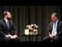

<html lang="en">
 <head>
<!-- Favicon -->
<link rel="shortcut icon" href="../../favicon.ico">
  <meta charset="utf-8"/>
  <title>
   Glenn Greenwald Speaks - Ottawa - 10/25/2014
  </title>
  <meta content="Post on /v/Conspiracy from 2014-10-26 by salvia_d." name="description"/>
  <meta content=" Glenn Greenwald Speaks - Ottawa - 10/25/2014" property="og:title"/>
  <meta content="Post on /v/Conspiracy from 2014-10-26 by salvia_d." property="og:description"/>
  <link href="../../static/css/page.css" rel="stylesheet"/>
  <meta content="https://voat.conspiracy.hackliberty.org/thumbnails/37/94/37948085-0c66-416c-a043-b4b8298e7805.jpg" property="og:image"/>
  <meta content="https://voat.conspiracy.hackliberty.org/v/conspiracy/31553.html" property="og:url"/>
  <meta content="width=device-width, initial-scale=1" name="viewport"/>
  <link href="https://voat.conspiracy.hackliberty.org/v/conspiracy/31553.html" rel="canonical"/>
  <meta content="article" property="og:type"/>
  <meta content="Voat /v/Conspiracy Archive" property="og:site_name"/>
  <meta content="en_US" property="og:locale"/>
  <meta content="summary_large_image" name="twitter:card"/>
  <meta content="Glenn Greenwald Speaks - Ottawa - 10/25/2014" name="twitter:title"/>
  <meta content="Post on /v/Conspiracy from 2014-10-26 by salvia_d." name="twitter:description"/>
  <meta content="https://voat.conspiracy.hackliberty.org/thumbnails/37/94/37948085-0c66-416c-a043-b4b8298e7805.jpg" name="twitter:image"/>
 </head>
</html>
<body class="dark">
 <div id="container">
  <!-- array (
  'submissionid' => 31553,
  'creationDate' => '2014-10-26 23:44:00',
  'domain' => 'youtube.com',
  'formattedContent' => NULL,
  'isAdult' => 0,
  'isAnonymized' => 0,
  'subverse' => 'Conspiracy',
  'thumbnail' => '37948085-0c66-416c-a043-b4b8298e7805.jpg',
  'title' => ' Glenn Greenwald Speaks - Ottawa - 10/25/2014',
  'url' => 'https://www.youtube.com/watch?v=B4C52glgSC4',
  'userName' => 'salvia_d',
  'archivedLink' => NULL,
  'archivedDomain' => NULL,
  'isDeleted' => 0,
) -->
  <div style="text-align:center; font-size:24px; font-weight:bold;">
   <a href="../../index.html" style="text-decoration: none; color: inherit;">
    Voat /v/Conspiracy Archive
   </a>
  </div>
  <div class="content" role="main">
   <div class="sitetable linklisting" id="siteTable">
    <div class="submission id-31553 link type-text" id="submission-31553">
     <a name="submissionTop">
     </a>
     <p class="parent">
     </p>
     <a class="thumbnail may-blank" href="https://www.youtube.com/watch?v=B4C52glgSC4" target="_self">
      
     </a>
     <div class="entry unvoted">
      <p class="title">
       <a class="title may-blank" href="https://www.youtube.com/watch?v=B4C52glgSC4" tabindex="1" target="_self" title=" Glenn Greenwald Speaks - Ottawa - 10/25/2014">
        Glenn Greenwald Speaks - Ottawa - 10/25/2014
       </a>
       <span class="domain">
        (
        <a href="https://archive.searchvoat.co/search.php?d=youtube.com">
         youtube.com
        </a>
        )
       </span>
      </p>
      <p class="tagline">
       submitted
       <time datetime="2014-10-26T23:44:00+00:00" title="10/26/2014 11:44:00 PM">
        2014-10-26T23:44
       </time>
       by
       <span class="userattrs">
        <a class="author may-blank" href="https://archive.searchvoat.co/search.php?u=salvia_d">
         salvia_d
        </a>
       </span>
      </p>
      <ul class="flat-list buttons">
       <li class="first">
        <a class="comments may-blank" href="https://archive.searchvoat.co/v/Conspiracy/31553" rel="nofollow">
         1 comment
        </a>
       </li>
      </ul>
     </div>
     <div class="child">
     </div>
     <div class="clearleft">
     </div>
    </div>
    <div class="clearleft">
    </div>
   </div>
   <div class="horizontal-line">
   </div>
   <div class="commentarea">
    <div class="sitetable nestedlisting" id="siteTable">
     <div class="child id-29007 comment even" style="">
      <div class="entry unvoted">
       <div class="noncollapsed" id="29007" style=";">
        <p class="tagline">
         <a class="author may-blank" href="https://archive.searchvoat.co/search.php?u=obnoxious_commenter">
          obnoxious_commenter
         </a>
         <span class="userattrs">
         </span>
         <time datetime="2014-10-27T04:11:00+00:00" title="10/27/2014 4:11:00 AM">
          2014-10-27T04:11
         </time>
        </p>
        <div class="usertext-body may-blank-within" id="commentContent-29007">
         <div class="md">
          <p>
           <p>
            At the 1:38:00 mark,  oh this is not an exact transcript of this part. I am just human and did as best as I could.
           </p>
           <blockquote>
            <p>
             Q:Could you search through your files on climate change, and release that information sooner than later?
            </p>
            <p>
             A taste of my life for the past 16 months. Multiple parties demanding release on files based on topics. We have done some reporting on climate change, including spying on climate conferences, where countries got together to negotiate accord. i would say 2 things
            </p>
            <p>
             one thing important to understand, and  I realize the temptations  to fantasize about what you wish would ccome in the world,and assume that I have it, and I can release it at any moment, edward snowden took a lot of documents, but not on every topic. if he took documents relevant on climate change, they would of been reported on already.
            </p>
            <p>
             and be careful on saying "This is THE issue." with regards to topics like climate change because there is short term harms and long terms harms. How you weight these is difficult, but i agree with core point, which. We human beings are bad at evaluation risk.
            </p>
            <p>
             We are tribal creatures. Terrorism triggers a tribal instinct in us which is that we have been attacked as a collective.  Its the reason terrorism is so susceptible to being manipulated because its an othering process.There is this other people, outside the collective, who have attacked us.  Its  a powerful instinct that we as human beings have for all kinds of evolutionary reasons.  Terrorists are the outsiders who have attacked us. This is why we responding to it more than say, the distant and scientific threat of climate change, even though, from every rational metric, climate change is much more threatening.
            </p>
            <p>
             guard against the deliberate manipulation of the makeup of our instinct and emotional constitution because that is how we get led to evaluating this world irrationally.
            </p>
           </blockquote>
           <p>
            In regards to peoples tempations that he has all the documents with regards to climate change, and that he can release them at any moment....
           </p>
           <p>
            Well he does have all the documents that Snowden gave him. Those he has, but is clearly not willing to release them all. Why wont he?
           </p>
           <p>
            Greenwald said he wrote about climate change, but it was in relation to the topics covered in the Snowden revelations. Interesting is how he said that if snowden took documents on climate change, it would of been reported on already.  Then, was the article on spying at Climate conferences not about climate change, but on government spying? Well no shit, he just said so! Its all ok so long as its to prevent the threat of terrorism.
           </p>
           <p>
            So topics of concern which undermine, that terrorism triggers a tribal instinct in us,  which is that we have been attacked as a collective, need to be guarded against .Topics like climate change can manipulate us into, not taking terrorism as a serious threat to the collective, whether it be American or Canadian.
           </p>
           <p>
            Thus, topics like climate change, must not be allowed to threaten the collective from the terrorist threat. Short term issues are more valuable than long term issues.
           </p>
          </p>
         </div>
        </div>
        <ul class="flat-list buttons">
         <li class="first">
          <a class="bylink" href="https://archive.searchvoat.co/v/Conspiracy/31553/29007" rel="nofollow">
           link
          </a>
         </li>
        </ul>
       </div>
      </div>
     </div>
    </div>
   </div>
  </div>
 </div>
<!-- Footer Section -->
<footer class="container-fluid mt-3">
  <p class="small mb-0">
    /v/conspiracy archive has 42504 posts and 159856 total comments.
    <a href="https://git.hackliberty.org/c0mmando/voat-conspiracy-archive/">source code</a>.
  </p>
</footer>

<script src="../../static/js/jquery-3.7.1.slim.min.js"></script>
<script src="../../static/js/comments-toggle.js"></script>

</body>
